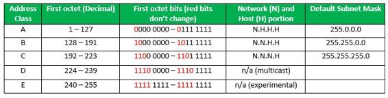
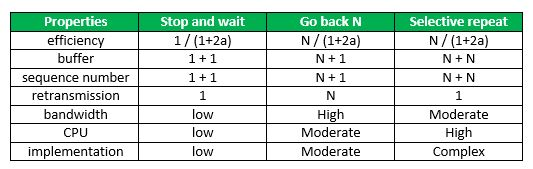
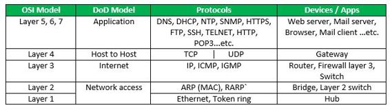
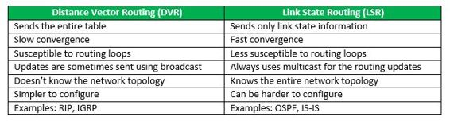

See Last Minute Notes on all subjects here.
- Class Full Addressing Table

- Flow Control
N = Sender’s Window Size. (in SR both sender and receiver window are same)
a = Tp/Tt
- Sequence No. >= (Sender’s Window Size) + (Reciever’s Window Size )
- Efficiency in TDM(polling) = Tt/(Tpoll + Tt+ Tp)
- In CSMA/CD
Tt >= 2*Tp
Hence, min frame length = 2*Tp*B
- CSMA/CD
Efficiency = 1/(1 + 6.44a)
- N = No. of stations
Early Token Reinsertion : Efficiency = 1/(1 + a/N)
Delayed Token Reinsertion : Efficiency = 1/(1 + (N+1)a/N) - Pure Aloha Efficiency = 18.4 %
Slotted Aloha Efficiency = 36.8% - Layers and there uses

- Difference between DVR and LSR

- In TCP congestion control Algorithm
When Time Out Occurs Algorithm Enters Slow Start Phase
When 3 Duplicate occurs algorithm enters congestion avoidance phase - Network Security
For Symmetric Key : n*(n-1)/2 keys are required.
For Public Key : 2*n key are required ( each node will have private and public key).
Deffie Hellman Key Exchange
R1 = gx mod p
R2 = gy mod q
Both will have same key = gxy mod p.